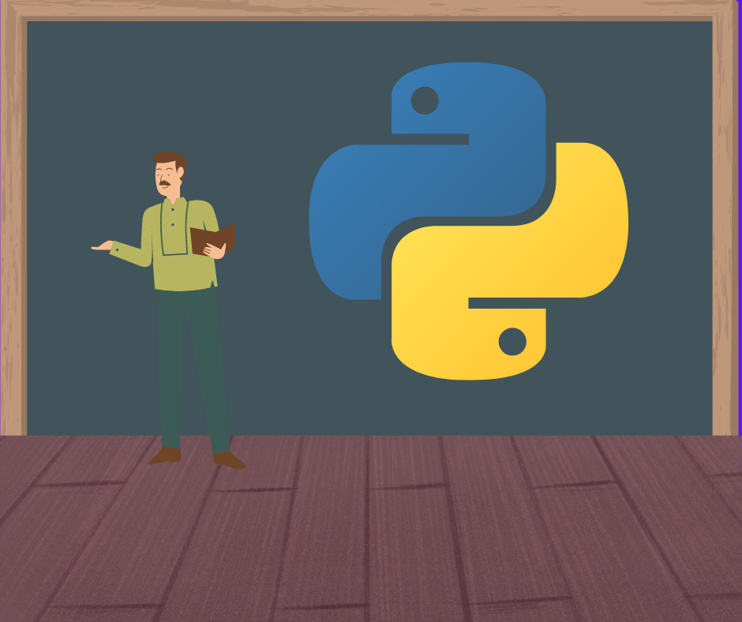
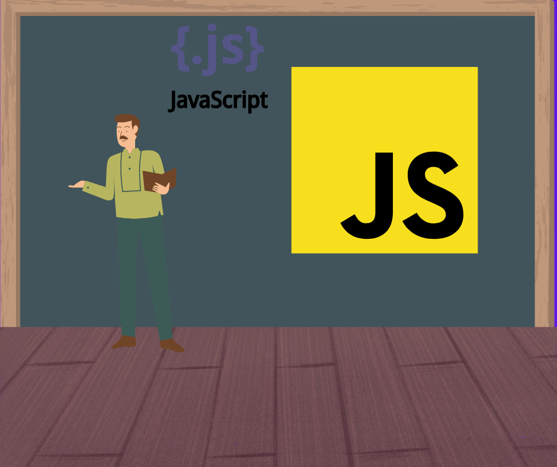
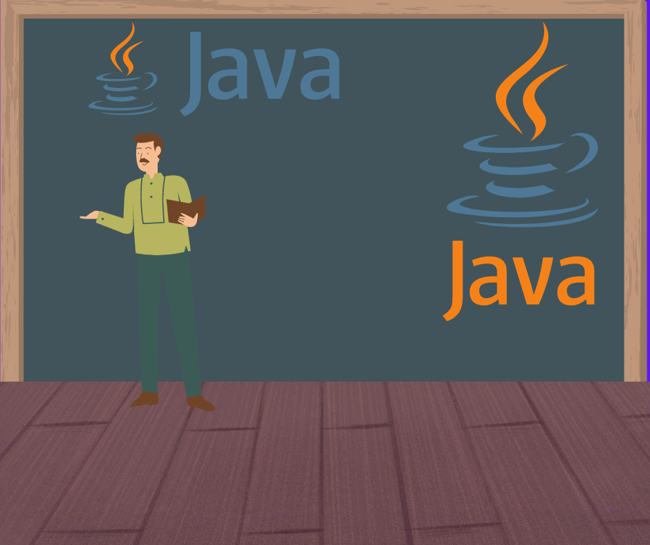
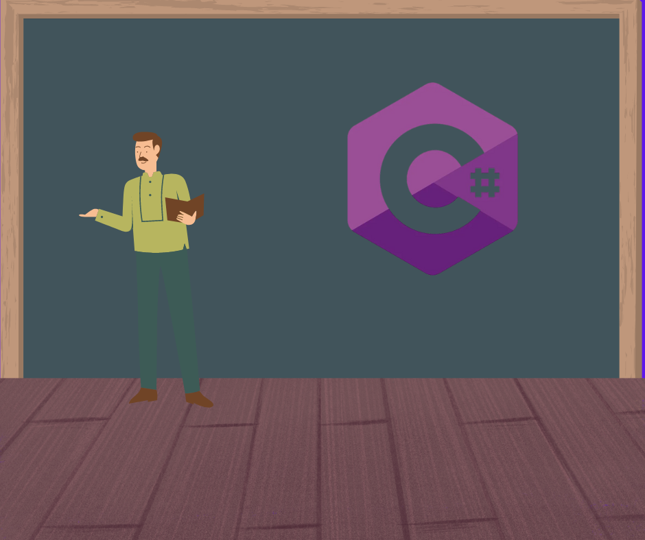
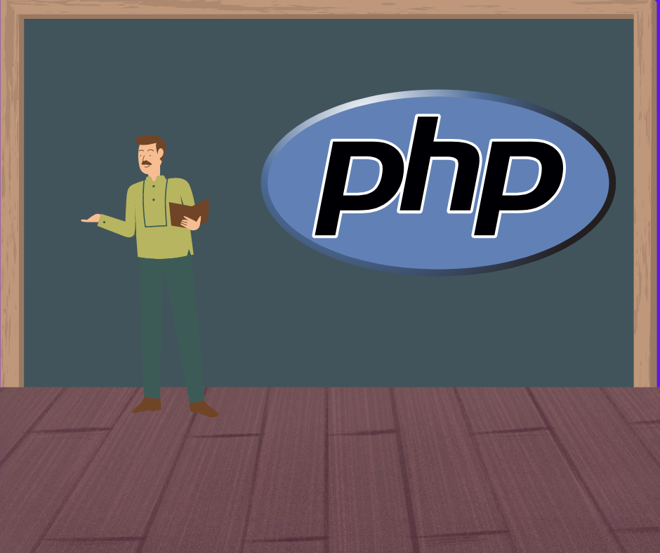

Linguagens de programação mais utilizadas
A primeira das linguagens de programação mais usadas pelas empresas de tecnologia é Python.
É um dos códigos de mais fácil leitura e é bastante utilizado para desenvolvimento web e machine learning.
É uma linguagem de programação que permite a você criar conteúdo que se atualiza dinamicamente.
Foi originalmente implementada como parte dos navegadores web para que scripts pudessem ser executados do lado do cliente e interagissem com o usuário
é amplamente utilizado em aplicações web e tem ganhado espaço no desktop/mobile.
Se caracteriza por ser portável, ou seja, é possível compilar um programa em Java de maneira fácil para todo tipo de aparelho. Vale lembrar também que o Java é a linguagem mais usada para a criação de aplicativos Android.
O programador Java também conta com um conjunto de APIs que facilitam o desenvolvimento ao oferecerem soluções para situações comuns de desenvolvimento.
É uma linguagem de programação orientada a objetos, que foi desenvolvida pela Microsoft e faz parte da plataforma . NET.
Assim como o C++, é mais complexo de se aprender que outras linguagens como Python e JavaScript. Por outro lado, ainda é uma linguagem bastante requisitada na área de desenvolvimento de games, se tornando essencial para quem planeja entrar nesse mercado.
Usado em sua maioria em aplicações web, a linguagem PHP é útil para incluir funções a uma página que o HTML não é capaz de suportar.
O PHP também tem suporte à maioria dos servidores web atualmente. Isso inclui o Apache, o IIS e muitos outros.
Olhando para o maior número de postagens de emprego no LinkedIn nos EUA e europa, CodingNomads concedeu o primeiro lugar ao Python. Em segundo lugar ficou Java, com JavaScript, C++, C#, C, TypeScript, PHP, Perl e Ruby completando o top 10.